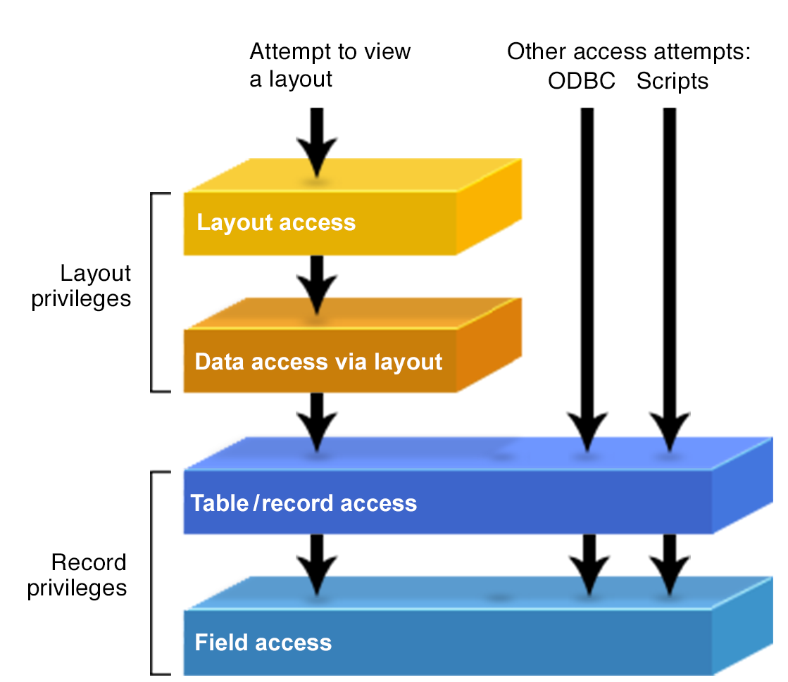

Home >
How layouts privileges and record privileges interact Both layouts privileges and record privileges restrict what you can see and do to data in database files, but there are important distinctions and interactions that you should be aware of when you use them. Layouts privileges and record privileges provide layers of protection as depicted in the illustration below. As users attempt to access data, any one of the layers can restrict access to data; one type of privilege does not override or supersede another one. They all act together to restrict access to layouts and data. However, layout privileges offer limited data access protection because they only protect individual layouts and the data they display. Even if you use layout privileges to restrict access to every layout in a file, there are many other potential ways to access the data, including: • Access JDBC and ODBC • Scripts, calculations, and Apple events that access data • Relationships from other files that could display the data  Important To more fully protect data, use record privileges, which limit access to all occurrences of specific tables, records, or fields no matter where they are displayed or accessed. The following table summarizes the strengths and drawbacks of layouts privileges and record privileges: Privilege Good for Drawbacks Layouts privileges • Prohibiting layout design changes in Layout mode • Making layouts view-only • Hiding layouts • Does not protect the underlying table data that the layout displays, leaving it vulnerable to be accessed in many ways Record privileges • Comprehensively protecting table, record, and field data wherever they are accessed • None When you use layouts privileges to restrict data access, make sure you also use appropriate record privileges to completely protect your data. For more information, see Editing record access privileges and Editing layouts privileges.